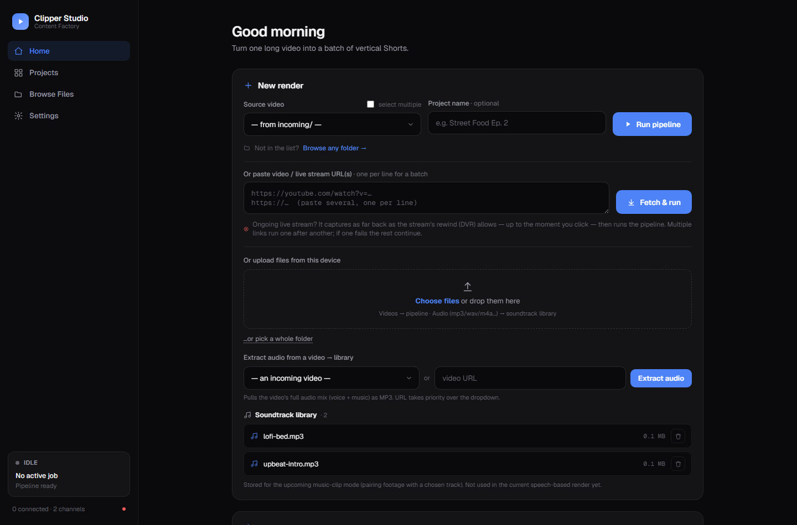
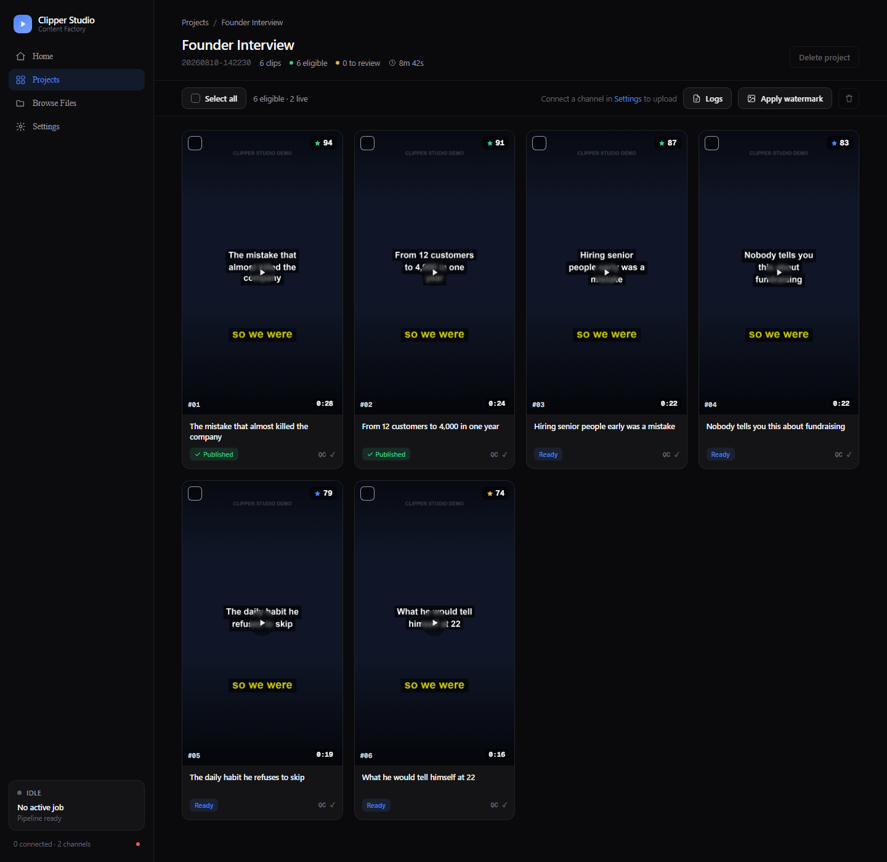
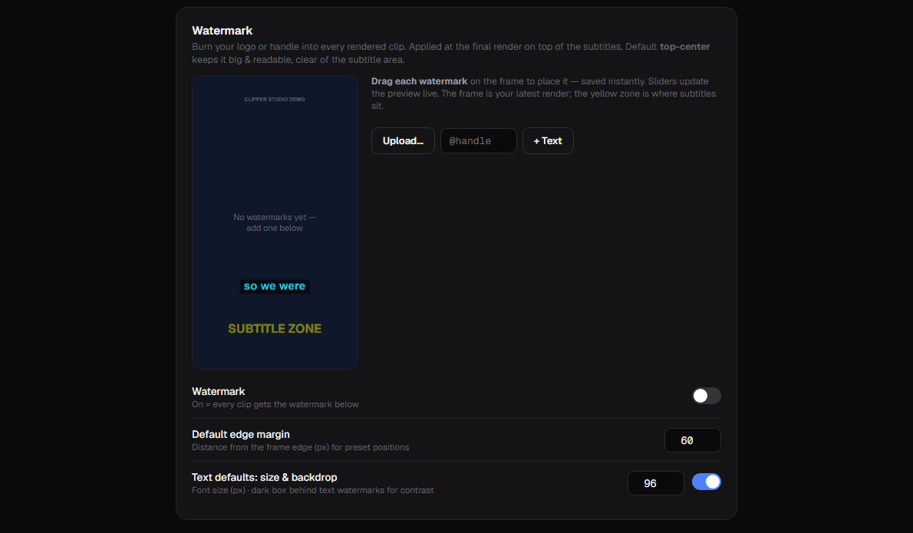
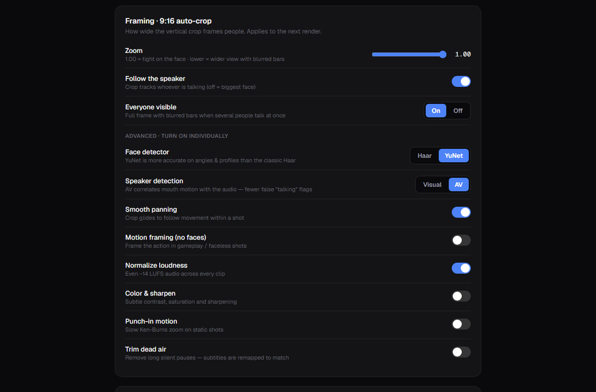

Five ways to get video in
A file from incoming/, one or more video or livestream URLs, a browser upload, a Google Drive folder, or any path on disk.
Clipper Studio transcribes your podcast, interview, stream VOD or gameplay recording, asks a local LLM which moments are worth cutting, reframes each one to 9:16 while following whoever is talking, burns in karaoke subtitles, writes the metadata — and uploads it if you want.

A manager runs each stage in order with retries and per-project logging. Every stage writes its output to disk, so you can inspect, fix or re-run any part of it by hand.
Built for people who cut a lot of clips and got tired of doing the same nine steps by hand.
A file from incoming/, one or more video or livestream URLs, a browser upload, a Google Drive folder, or any path on disk.
YuNet face detection plus audio-visual speaker detection, so the vertical crop follows whoever is actually talking instead of the biggest face.
Word-by-word ASS subtitles burned into the render, with font, size, colour, outline and vertical margin all configurable.
Title, description, hashtags and keywords per clip, in the language you pick — shaped by a persistent campaign brief if you have one.
Cooperative checkpoints between agents, clips and segments — a stop never leaves you with a half-written render.
Clip length, crop tightness, loudness, silence trimming, subtitle style and the agent prompts themselves — all editable from the dashboard.
Each YouTube channel keeps its own OAuth token. Bulk-select clips and send them out — only the ones that passed QC and compliance.
"Clips 10–30s, zoom out a bit, then run tes1.mp4" — the built-in assistant changes settings, applies briefs and starts renders.
One Flask app on 127.0.0.1:5000. Screenshots below use a small synthetic demo
dataset, so the projects and clips shown are placeholders.
Every clip shows its thumbnail, the score the LLM gave it, the generated title, duration, QC and compliance status, and whether it is already published. Select any combination and upload or delete them together.

Upload a logo or add a text handle, then drag it onto a real frame from your latest render. The yellow zone marks where subtitles will sit, so you do not cover them. Watermarks can also be applied to an already-rendered project.

How tightly the 9:16 crop holds a face, whether it follows the active speaker, what happens when several people talk at once — plus loudness normalisation, silence trimming and punch-in motion.

Assuming ffmpeg and Ollama are already on your machine. Full details are in the README.
Python 3.10+, ffmpeg and ffprobe on your PATH, and Ollama with a model pulled.
ollama pull qwen2.5:7b
A virtualenv is recommended but not required.
git clone https://github.com/dhimasbagus402/clipper-bot.git cd clipper-bot pip install -r requirements.txt -r requirements-dashboard.txt
Both files are git-ignored — config.yaml holds your settings, .env your dashboard password.
cp config.example.yaml config.yaml cp .env.example .env
Then open 127.0.0.1:5000 and drop in a video.
python dashboard.py
| Python | 3.10 or newer |
| ffmpeg | ffmpeg + ffprobe on PATH |
| Ollama | Running locally, one model pulled |
| GPU | Optional — CUDA speeds up transcription |
| Disk | Renders are large; plan for several GB per hour of source |
The compose file mounts the project directory, so config, projects and tokens stay on the host. Ollama is expected to run on the host, not in the container.
docker compose up -d --build
The pipeline also runs headless.
python run.py incoming/podcast.mp4
Worth reading before you point it at a client campaign.
The compliance agent scans language, nothing else. It has no idea whether your music or footage is licensed, and YouTube's Content ID still applies to everything you upload.
The LLM ranks moments within one video. A 94 does not mean the clip will perform — it means the model liked it more than the 79.
Speaker tracking works well for talking-head content. Fast-moving subjects and crowded frames still produce awkward crops.
The TikTok, Instagram and Facebook tiles in the interface are placeholders for planned work, not working integrations.
No. An NVIDIA GPU with CUDA makes transcription several times faster, but everything runs on CPU as well — it is simply slower on long videos.
No. Transcription uses faster-whisper and highlight selection uses Ollama, both running locally. The only network calls are the ones you ask for: downloading a source video, or uploading a finished clip to YouTube.
No. The compliance agent scans language only. It has no knowledge of whether your music or footage is licensed, and YouTube's Content ID still applies to anything you upload.
One upload costs roughly 1,600 units of YouTube's default 10,000/day quota, so about six uploads per day unless you request more from Google.
Yes, but set DASH_PASSWORD first. The dashboard can browse your filesystem,
start renders and upload to your account, so it must not be left open.
Yes. The system and user prompts for the Analyzer, SEO and Compliance agents are editable from Settings, with validation so you cannot save a prompt that breaks at render time.